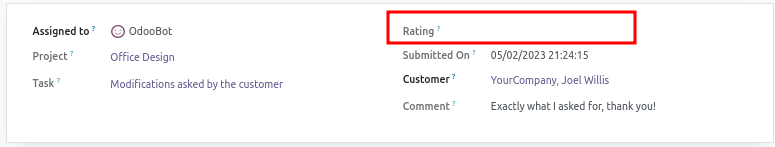

Value Mapping
From version 14.0 to version 15.0, in the module rating, the options
available for the field rating_text (model rating.rating) has been changed.
Source Code Differences
Version 14.0
class Rating(models.Model):
_name = "rating.rating"
rating_text = fields.Selection(
string='Rating',
selection=[
('satisfied', 'Satisfied'),
('not_satisfied', 'Not satisfied'),
('highly_dissatisfied', 'Highly dissatisfied'),
('no_rating', 'No Rating yet'),
]
)
See Full V14 Code Source.
Version 15.0
class Rating(models.Model):
_name = "rating.rating"
rating_text = fields.Selection(
string='Rating',
selection=[
('top', 'Satisfied'),
('ok', 'Okay'),
('ko', 'Dissatisfied'),
('none', 'No Rating yet'),
]
)
See Full V15 Code Source.
Analysis
---Fields in module 'rating'---
rating / rating.rating / rating_text (selection) :
selection_keys is now '['ko', 'none', 'ok', 'top']'
('['highly_dissatisfied', 'no_rating', 'not_satisfied', 'satisfied']')
Result without migration script / Expected Result
V14 table rating_rating
id |
res_id |
res_model |
rating |
rating_text |
|---|---|---|---|---|
1 |
3 |
project.task |
5 |
satisfied |
2 |
22 |
project.task |
1 |
highly_dissatisfied |
3 |
4 |
project.task |
5 |
satisfied |
4 |
2 |
project.task |
1 |
highly_dissatisfied |
V15 table rating_rating (Without migration script)
same table as in version 14.
Problem:
The old value does not correspond to anything in the new version and is therefore no longer displayed in the interface.
V15 table mail_activity_type (With migration script)
id |
res_id |
res_model |
rating |
rating_text |
openupgrade_legacy_14_0_rating_text |
|---|---|---|---|---|---|
1 |
3 |
project.task |
5 |
top |
satisfied |
2 |
22 |
project.task |
1 |
ko |
highly_dissatisfied |
3 |
4 |
project.task |
5 |
top |
satisfied |
4 |
2 |
project.task |
1 |
ko |
highly_dissatisfied |
Contribution to OpenUpgrade
Update upgrade_analysis_work.txt file
Mention the operation performed, starting with
# DONE:
---Fields in module 'rating'---
rating / rating.rating / rating_text (selection) :
selection_keys is now '['ko', 'none', 'ok', 'top']'
('['highly_dissatisfied', 'no_rating', 'not_satisfied', 'satisfied']')
# DONE: post-migration: mapped value from old keys to new keys
Write migration Script
In the pre-migration.py script add:
from openupgradelib import openupgrade
@openupgrade.migrate()
def migrate(env, version):
openupgrade.copy_columns(
env.cr,
{"rating_rating": [("rating_text", None, None)]},
)
In the post-migration.py script add:
from openupgradelib import openupgrade
@openupgrade.migrate()
def migrate(env, version):
openupgrade.map_values(
env.cr,
openupgrade.get_legacy_name("rating_text"),
"rating_text",
[
("satisfied", "top"),
("not satisfied", "ok"),
("highly_dissatisfied", "ko"),
("no_rating", "none"),
],
table="rating_rating",
)
Notes
Sometimes, there is a loss of information. that is the case in the above example: Some mapping are correct:
satisfied->tophighly_dissatisfied->kono_rating->none
But the last mapping is
not satisfied->ok, which changes the semantics of the data. It is not always possible to do otherwise and the developer must make the best suited choices.Sometimes, there is nothing to do. This is the case:
when there are just one or more new options available in the recent version that are new features,
AND when no option is disappeared,
AND when every option in the old version has the same meaning in the new version.
Always be sure that none of the old cases in previous version may match one of the new selection values. If it’s the case, you will need to perform a query selecting and updating the proper records that match this criteria. For example, regarding the change in the field
stateon the modelaccount.bank.statementbetween the v13 and the v14:In v13 : Two options are available:
open/confirm. See v13 code.In v14 : Three options are available:
open/posted/confirm. See v14 code.
At first sight, we could think that there is nothing to do. But in reality, the meaning of the
confirmvalue has changed between version 13 and version 14.In v13,
confirmmeans “Validated”. (reconciled or not)In v14:
postedmeans “Validated but not fully reconciled”confirmmeans “Validated and fully reconciled”
As a result, some elements in the state
confirmin v13 must be in the stateconfirmin v14, but other elements in stateconfirmin v13 must be in the statepostedin v14. This is done by this script.the old data is kept in the column whose name starts with
openupgrade_legacy_. This allows you to check that everything is correct after the migration, and to be used by further dependent modules in their migration scripts. Once this is done, you can delete this data. (See: After migration)